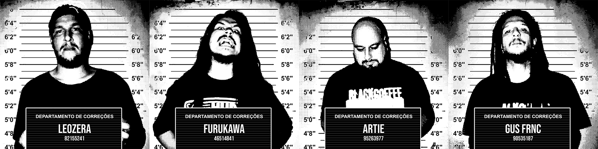

A BlackCoffee surgiu no interior de São Paulo em 2022 em meio ao Caos de um Brasil terminando um mandato genocida com a intenção de fazer barulho; um Metal Crossover direto na jugular, com letras que encaram de frente o caos social, político e existencial dos nossos tempos.
Com a crueza rítmica que lembra HELMET, a urgência incendiária de BAD RELIGION e a densidade de NAILBOMB e REFUSED, a banda transforma essas influências em confronto - Riffs pesados, baixo pulsando no estômago, bateria martelando como um manifesto e vocais que soam como um Rugido de Kaiju.
No palco, Leozera das Massas espanca a bateria com precisão cirúrgica, Artie “Stage Invader” Oliveira escarra cada verso como se fosse o último, Furukawa costura melodias afiadas na guitarra no auge da desordem e o Gus sustenta a muralha sonora nos graves.
A demo Copo Americano (2022) foi o primeiro aviso - O EP Queimando Pontes (2023) confirmou que não há retorno, trazendo inéditas e novas versões do Copo Americano, incluindo o single “O Bicho” que ultrapassou 1.000 streams no Spotify já no primeiro fim de semana. Em 2025, a banda expandiu sua identidade com QMND/PNTS – The Remixes(um álbum de músicas do Queimando Pontes em versão Eletrônica)e o EP Untitled S/T(o primeiro com o Gus no baixo), consolidando um som ainda mais denso, moderno e provocador.
Em 2026, a BlackCoffee entra em estudio mais uma vez para o lançamento de novo material.
